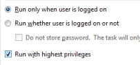

Some PowerShell cmdlets and Windows commands such as REG ADD and SUBINACL have to be run from an elevated prompt, there are several ways of doing this.
It is possible to right click Powershell.exe (or it's Start menu shortcut) and run it 'As Admin'.
Shortcuts can be edited to always run as Admin - Properties | Shortcut | Advanced then tick "Run as administrator".
To elevate a script from a (non-elevated) PowerShell command line :
PS C:\> Start-Process powershell -ArgumentList '-noprofile -file MyScript.ps1' -verb RunAs
A set of commands can also be saved in a scriptblock variable, and then passed to a new (elevated) PowerShell session:
Start-Process -FilePath powershell.exe -ArgumentList $code -verb RunAs -WorkingDirectory C:
To run an entire PowerShell session 'As Admin' from an existing PowerShell (non-elevated) session:
PS> Start-Process powershell.exe -Verb runAs
If you use Invoke-Command to run a script or command on a remote computer, then it will not run elevated even if the local session is. This is because any prompt for elevation will happen on the remote machine in a non-interactive session and so will fail.
Using Enter-PSSession to start a whole new session will support elevation if you specify CredSSP, which enables the delegation of user credentials:
New-PSSession ss64dom.com -Auth CredSSP -cred ss64dom\user64
A function that will return $True if the current session is running elevated or $False if not:
function isadmin { # Returns true/false ([Security.Principal.WindowsPrincipal] [Security.Principal.WindowsIdentity]::GetCurrent()).IsInRole([Security.Principal.WindowsBuiltInRole] "Administrator") }To ensure a script is only run As Admin, add this to the beginning
If (-NOT ([Security.Principal.WindowsPrincipal][Security.Principal.WindowsIdentity]::GetCurrent()).IsInRole([Security.Principal.WindowsBuiltInRole] "Administrator")) { Echo "This script needs to be run As Admin" Break }In PowerShell v4.0 the above can be simplified by using a #Requires statement:
#Requires -RunAsAdministrator
If a scheduled task invokes a UAC prompt, then the task may fail to run unattended, to prevent this make sure that you select the 'Run With Highest Privileges' check box, (or run Set-ScheduledJobOption -RunElevated )

When a script is run with elevated permissions several aspects of the user environment will change: The current directory, the current TEMP folder and any mapped drives will be disconnected.
To add a "Run as Administrator" context menu for .ps1 files, run this from an elevated PowerShell prompt:
PS C:\> New-Item -Path "Registry::HKEY_CLASSES_ROOT\Microsoft.PowershellScript.1\Shell\runas\command" ` -Force -Name '' -Value '"c:\windows\system32\windowspowershell\v1.0\powershell.exe" -noexit "%1"'
“Winners make a habit of manufacturing their own positive expectations in advance of the event” ~ Brian Tracy
Related:
VBScript: Run with Elevated Permissions
elevate - Command-Line UAC Elevation Utility